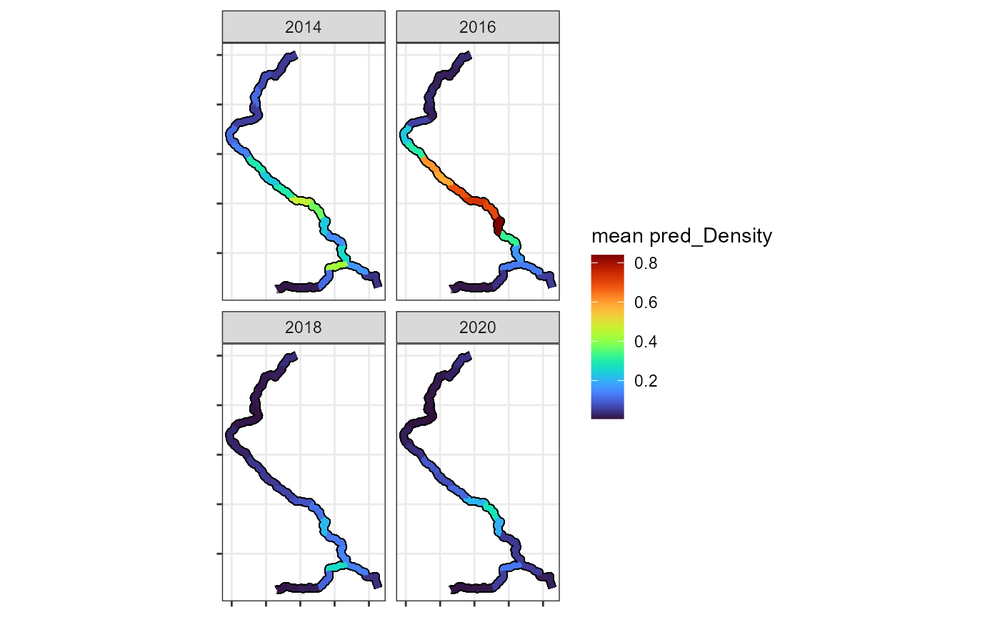
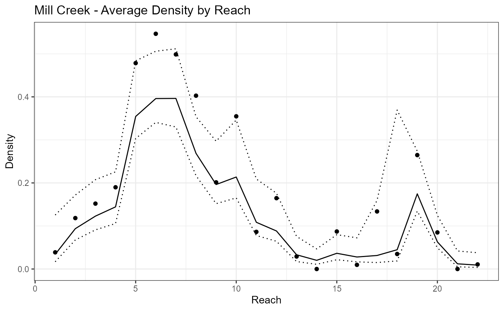

Fitting a VAST Model
model_fitting.Rmd
library(StreamVAST)
library(VAST)
#> Loading required package: TMB
#> Loading required package: FishStatsUtils
#> Loading required package: units
#> udunits database from C:/Users/harj3477/AppData/Local/R/win-library/4.2/units/share/udunits/udunits2.xml
#> Loading required package: marginaleffects
#> ###########################################################################################
#> Loading package VAST version 3.10.0
#> For information and examples, please see http://github.com/james-thorson/VAST/
#> ###########################################################################################
library(sf)
#> Linking to GEOS 3.9.3, GDAL 3.5.2, PROJ 8.2.1; sf_use_s2() is TRUE
library(ggplot2)
library(sfnetworks)
library(splines)Important note
A new version of VAST, tinyVAST, is currently being developed and is likely to offer improved stability in the long term. Anticipate that much of this chapter will change as the code migrates to use tinyVAST instead of VAST.
Fitting a VAST Model to Stream Network Data
This is the second chapter explaining how to use the functions in the StreamVAST package. For information on how to prepare and format data, please refer to the previous chapter Preparing a Stream Network
In the previous chapter, we imported data for steelhead salmon redds in the Mill Creek watershed, in Washington State. The two most important data objects are a data frame with the dates and locations of redds, and an sf object with LINESTRINGS defining the different segments of the network. A third object, the set of survey tracks is also useful. Future versions of this package will make use of S3 classes to streamline the tracking of these objects.
head(Mill.data)
#> X Year Day Reach Effort Redds habitat STRM_NAME root parent
#> 1 1 2013 64 1 2465.601 0 TRUE Mill Creek TRUE NA
#> 2 2 2013 64 2 3499.699 0 TRUE Mill Creek FALSE 1
#> 3 3 2013 64 3 3354.350 0 TRUE Mill Creek FALSE 2
#> 4 4 2013 64 4 3354.350 0 TRUE Mill Creek FALSE 3
#> 5 5 2013 78 1 2465.601 0 TRUE Mill Creek TRUE NA
#> 6 6 2013 78 2 3499.699 0 TRUE Mill Creek FALSE 1
#> parent.distance
#> 1 NA
#> 2 3499.699
#> 3 3427.024
#> 4 3354.350
#> 5 NA
#> 6 3499.699
print(Mill.reaches,n = 4)
#> Simple feature collection with 22 features and 8 fields
#> Geometry type: LINESTRING
#> Dimension: XY
#> Bounding box: xmin: 941970.7 ymin: 322499 xmax: 963147.4 ymax: 357159.5
#> Projected CRS: NAD83 / Washington South (ftUS)
#> First 4 features:
#> from to habitat Reach STRM_NA root parent prnt_ds
#> 1 1 2 1 1 Mill Creek 1 NA NA
#> 2 2 3 1 2 Mill Creek 0 1 3499.699
#> 3 3 4 1 3 Mill Creek 0 2 3427.024
#> 4 4 5 1 4 Mill Creek 0 3 3354.350
#> geometry
#> 1 LINESTRING (963147.4 322499...
#> 2 LINESTRING (961311.9 324437...
#> 3 LINESTRING (958655.6 326211...
#> 4 LINESTRING (958123.2 328790...Additional formatting for VAST
There are a few more minor formatting tasks that need to be completed before we can fit a model. We need to draw information from Mill.reaches to add an “Area” column that tracks the total area in each reach, separate from the “Effort”. The date will also be converted into a variety of formats (statistical week, Month) that will be useful later. The objects are returned with additional formating as a streamvast class object. This object has numerous elements that will be gradually filled in using additional functions. This function also produces a map of the spatial frame and the data coverage provided by the surveys that can be useful as a diagnostic check.
Mill.vast<-ConstructStreamVAST(countdata = Mill.data,reachdata = Mill.reaches,surveydata = Mill.surveys,reachname = "Reach",countname = "Redds")
#> [1] "Initializing StreamVAST based on countdata and reachdata"
#> [1] "Converting length units to kilometers (Default)"
Vast requires specific formatting to define the spatial relationships along a stream network, and the above function calculates them automatically. Of particular note, is the “reachname” argument. The reachname is used as a key to unify different components, and must be consistent across all the datasets that feed into the process. The streamvast class also has a variety of slots reserved for the model and model outputs that are likely to be useful at later steps. In future steps, these slots will be gradually filled in, providing a convenient structure for storing the large number of outputs generated by VAST.
Choosing a temporal resolution
Depending on the system being modeled, a variety of temporal resolutions are possible. The second step is to define the temporal resolution, which will determine the overall structure of the vast model and predictions. Use the function “SetTemporalFrame” For this example, we will set the temporal resolution to two weeks, and will cover the 5 months from Feb. to June. We will also pad the ends of the data set with zeros, to mark the ends of the season.
Mill.vast<-SetTemporalFrame(streamvast = Mill.vast,Time = "Month",
startdate = "2013-02-01",enddate = "2022-06-30",padzero = T)This function fills in several slots of the Mill.vast object. The first is a data frame that contains everything we will need for VAST. This data frame has three important additions. First, the temporal element has been converted into a generic “Time” period that runs in sequence. It also includes two columns “Original” and “Dummy”. The Original column identifies actual data points, while the Dummy column identifies time periods or reaches for which no data is available, but that we would like the model to output a prediction.
head(Mill.vast$vastdata)
#> Time Year Day Month Reach vastid Redds Density Area Effort Lat
#> 1 2 2013 64 Mar 1 1 0 0 1.066710 0.7515168 46.19086
#> 2 2 2013 64 Mar 2 2 0 0 1.066710 1.0667105 46.19420
#> 3 2 2013 64 Mar 3 3 0 0 1.022408 1.0224078 46.19933
#> 4 2 2013 64 Mar 4 4 0 0 1.022408 1.0224078 46.20602
#> 5 2 2013 78 Mar 1 1 0 0 1.066710 0.7515168 46.19086
#> 6 2 2013 78 Mar 2 2 0 0 1.066710 1.0667105 46.19420
#> Lon original dummy
#> 1 -123.1760 TRUE FALSE
#> 2 -123.1866 TRUE FALSE
#> 3 -123.1954 TRUE FALSE
#> 4 -123.1992 TRUE FALSE
#> 5 -123.1760 TRUE FALSE
#> 6 -123.1866 TRUE FALSEThe second element of the list is a table that is useful for relating the time period back to it’s normal calendar date.
head(Mill.vast$timetable)
#> Time Month Year Key Refdate Day Original
#> 1 1 2 2013 2013-2 2013-02-15 46 FALSE
#> 2 2 3 2013 2013-3 2013-03-15 74 TRUE
#> 3 3 4 2013 2013-4 2013-04-15 105 TRUE
#> 4 4 5 2013 2013-5 2013-05-15 135 TRUE
#> 5 5 6 2013 2013-6 2013-06-15 166 FALSE
#> 6 6 2 2014 2014-2 2014-02-15 46 TRUECovariates
If your analysis plans to make use of covariates, now is the best time to set those up. As before, will add them to the existing streamvast object using the SetVASTCovariates function. VAST is capable of supporting a wide variety of model structures and this part is somewhat complex. Here we will show an example of how to add the statistical (julian) day as covariate as a spline to simulate seasonal associations in redd abundance.
The simplest way to add covariates is to supply a dataframe that matches to the vastdata slot under the “covariatedata” argument. Alternately, the “spcovars” argument can be used to supply covariates that match to specific reaches but are constant across time, such as elevation or slope. The “tempcovars” argument is similar for covariates that are constant across space for a given time, such as large scale weather patterns.
VAST is structured as a hurdle model and can have different covariate structures for the probability and density components. For this example we will include the for the probability component (“pform”), while leaving the density component off. The formula can include a variety of elements such as polynomials or splines. VAST is also capable of calculating spatially varying covariate effects, which is specified using the “pconfig” argument. This argument must be a matrix with columns equal to the total number of coefficients being estimated, in this case 5. See ?VAST::make_data for more details. Lastly, for computational reasons, it is also recommended that covariate values be centered to zero and scaled to have a standard deviation of 1.
Mill.vast<-SetVastCovariates(streamvast = Mill.vast,covariatedata = Mill.vast$vastdata,pform = formula(~bs(Day,degree=5)),pconfig=matrix(nrow=1,ncol=5,data=1),center = T,scale = T)An example in VAST
At this point, we are almost ready to run a model. VAST contains a wide variety of settings to allow users to effectively model different systems, and we will first define a settings object. While streamvast can supply default settings or run a basic optimization routine to test multiple options, this option is slow and users are encouraged to familiarize themselves with VAST’s myriad options. See ?VAST::make_settings for more details. Novice users can copy the below code chunk for reference.
settings <- make_settings(Region="stream_network",
zone=10,
purpose = "index2",
fine_scale=F,
n_x = nrow(Mill.vast$reachdata),
FieldConfig = c("Omega1"= 1, "Epsilon1" = 1, "Omega2" = 1, "Epsilon2" = 0),
RhoConfig = c("Beta1" = 2, "Epsilon1" = 2, "Beta2" = 2, "Epsilon2" = 0),
OverdispersionConfig = c("Eta1" = 0, "Eta2" = 0),
ObsModel = c(7, 0),
bias.correct = T,
use_anisotropy = F)
settings$Method<-"Stream_network"
settings$grid_size_km<-mean(Mill.vast$reachdata$Length)It is important to specify that Region = “stream_network”, and to set n_x equal to the number of reaches. The zone is the UTM time zone, and purpose = “index2” specifies that our goal is abundance or density prediction. FieldConfig is turns various components of the model on or off (the example removes several terms for simplicity and stability), and RhoConfig specifies the type autocorrelation (random-walk in this case). We are not modeling the overdispersion, so these settings are set to zero. ObsModel controls the distributions and link functions in the model, with the current setting indicating a Poisson count model with zero inflation. Anisotropy and fine_scale should be turned off. Please see the VAST documentation for details.
It is also necessary to manually set the method to “Stream_network” and to calculate a mean size for the prediction frame.
Next, we can run the model. If the preceding steps have been successful, “RunVAST” function will look through the streamvast object and the settings object to find all the necessary components.
Mill.vast<- RunVAST(streamvast = Mill.vast,vastsettings = settings)
#> Warning: package 'Matrix' was built under R version 4.2.3
#> Warning: package 'sp' was built under R version 4.2.3Preliminary checks and Troubleshooting
The outputs of the model can be accessed from Mill.vast$vastmodel, several of which are useful to determine if the algorithm has run successfully. A basic check of the parameter estimates is often advisable.
Mill.vast$vastmodel$parameter_estimates$Convergence_check
#> [1] "There is no evidence that the model is not converged"
Mill.vast$vastmodel$parameter_estimates$AIC
#> [1] 1222.029
#> attr(,"logarithm")
#> [1] TRUE
Mill.vast$vastmodel$parameter_estimates$number_of_coefficients
#> Total Fixed Random
#> 1258 14 1244If your model is not converging, experiment with the settings. It is often productive to begin with a simple model (by inputting 0s in FieldConfig or RhoConfig) and then to gradually increase the complexity. Refer to the VAST documentation for specifics.
The predictions from the fitted VAST model can be quickly extracted using a helper function VASTpreds. This function will format the predictions into a data frame, and provide the density and count estimates for each reach at each time period. It also provides upper and lower 90% confidence bounds, based on samples drawn from the posterior distribution.
Mill.vast<-VASTpreds(streamvast = Mill.vast)
#> [1] "Simulating predicted density distribution"
#> [1] "Simulating predicted count distribution and residuals"The plots produced above are from the DHARMa package, which provides scaled residual estimates for hierarchical models, and is a good first step to assessing model fit. Note that when large amounts of dummy data are included, the DHARMa plots can be misleading.
A second functon can produce maps from the output.
plotPredictionMap(streamvast = Mill.vast,mapvar = "Density",
make.labels = F,xaxis.breaks = c(-123.24,-123.20))
These maps can also be faceted by year, month, etc.
plotPredictionMap(streamvast =Mill.vast, subset=Mill.vast$preds$Year%in%c(2014,2016,2018,2020), mapvar="Density",facet = "Year",make.labels = F,xaxis.breaks = 0,yaxis.breaks = 0)
Additional maps can be easily generated using generic plotting functions. For instance, the average density with respect to space is stored under the “spacedata” slot.
ggplot(data=Mill.vast$spacedata)+
geom_point(aes(x=Reach,y=Density))+ggtitle("MAG - Average Density by Reach")+
geom_line(aes(x=Reach,y=pDensity))+
geom_line(aes(x=Reach,y=pDensity_upper),linetype=3)+
geom_line(aes(x=Reach,y=pDensity_lower),linetype=3)+theme_bw()Similarly, the pattern over time is stored in “timedata.”
year.breaks<-aggregate(Mill.vast$timetable$Time,by=list(Mill.vast$timetable$Year),FUN=min)
ggplot(data=Mill.vast$timedata)+
geom_point(aes(x=Time,y=Density))+ggtitle("MAG - Average Density by Reach")+
geom_line(aes(x=Time,y=pDensity))+
geom_line(aes(x=Time,y=pDensity_upper),linetype=3)+
geom_line(aes(x=Time,y=pDensity_lower),linetype=3)+theme_bw()+
scale_x_continuous(breaks = year.breaks$x,labels = year.breaks$Group.1)